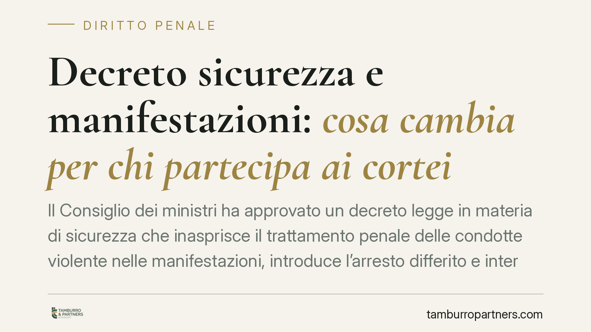

Decreto sicurezza e manifestazioni: cosa cambia per chi partecipa ai cortei
Il Consiglio dei ministri ha approvato un decreto legge in materia di sicurezza che inasprisce il trattamento penale delle condotte violente nelle manifestazioni, introduce l'arresto differito e interviene sui minori tra 14 e 18 anni. Essendo un decreto legge, le norme producono effetti dall'entrata in vigore ma dovranno essere convertite entro sessanta giorni. Vediamo cosa cambia in concreto.

Il provvedimento e i limiti di questa analisi
Il Governo ha varato un decreto legge in materia di sicurezza pubblica che interviene su più fronti del diritto penale: condotte violente in occasione di manifestazioni, modalità di arresto, trattamento dei minori e responsabilità dei genitori.
Una premessa di metodo è doverosa. Al momento in cui scriviamo, il testo definitivo pubblicato in Gazzetta Ufficiale e la numerazione esatta delle disposizioni penali introdotte o modificate vanno verificati sulla fonte ufficiale. Per correttezza evitiamo di attribuire un numero d'articolo del codice penale che non sia confermato dal testo pubblicato: le anticipazioni di stampa non coincidono sempre con l'articolato finale. Chi è coinvolto in una vicenda concreta deve fare riferimento al decreto effettivamente in vigore, citato per numero e data.
Inquadramento normativo
Il decreto legge è lo strumento previsto dall'art. 77 della Costituzione per i casi di necessità e urgenza: entra in vigore con la pubblicazione in Gazzetta Ufficiale, ma perde efficacia sin dall'inizio se non convertito in legge entro sessanta giorni. Questo significa che le nuove fattispecie sono già applicabili, ma il loro contenuto può cambiare in sede di conversione parlamentare, anche in modo significativo.
Sul piano sostanziale il provvedimento inasprisce il trattamento delle condotte violente commesse nel contesto di manifestazioni e cortei. Resta fermo un principio: la sola partecipazione a una manifestazione non integra reato. Ciò che viene sanzionato è la condotta violenta individuale, non la presenza. L'art. 17 della Costituzione tutela il diritto di riunirsi pacificamente, e qualsiasi fattispecie penale deve ritagliarsi attorno alla violenza concreta, non colpire l'esercizio del diritto in sé.
Proprio qui si colloca il nodo di legittimità costituzionale. L'art. 25 Cost. impone che la fattispecie penale sia determinata: deve descrivere con precisione la condotta vietata, così che il cittadino sappia in anticipo cosa è lecito e cosa no. Una norma che sanzioni la "partecipazione violenta" in termini generici rischia di risultare indeterminata e di comprimere il diritto di manifestare. Il bilanciamento tra sicurezza pubblica e libertà di riunione sarà uno dei terreni di vaglio della Corte costituzionale.
Arresto differito e minori
Tra le novità più rilevanti sul piano difensivo c'è l'arresto differito. In deroga alla regola generale per cui l'arresto in flagranza avviene nel momento del fatto, questo meccanismo consente alla polizia giudiziaria di procedere all'arresto anche a distanza di tempo, sulla base di documentazione video o fotografica, entro un termine prestabilito. L'impatto sulla difesa è concreto: la contestazione non nasce più dall'immediatezza, ma dalla ricostruzione successiva delle immagini. Diventa centrale contestare l'attribuibilità della singola condotta a una persona identificata, l'affidabilità del materiale e il rispetto dei termini.
Sul versante minorile, il provvedimento interviene sul regime dei soggetti tra 14 e 18 anni. Qui va fatta chiarezza tecnica: l'art. 98 del codice penale già prevede che il minore tra 14 e 18 anni è imputabile solo se, al momento del fatto, era capace di intendere e di volere. Non esiste una "presunzione automatica" di imputabilità. L'accertamento di questa capacità resta un passaggio obbligato e va condotto caso per caso. Eventuali modifiche in questo ambito andranno lette alla luce di tale principio, che non può essere aggirato senza porsi in tensione con i principi costituzionali sulla responsabilità personale. Il provvedimento prevede inoltre profili di responsabilità per i genitori.
Implicazioni pratiche
Per chi partecipa a manifestazioni, il rischio non deriva dalla presenza, ma da condotte riconducibili alla propria persona. L'arresto differito amplia la finestra temporale entro cui si può essere chiamati a rispondere, spostando il baricentro sulla prova per immagini. Per le famiglie di minori coinvolti, si aprono profili di responsabilità che richiedono una valutazione autonoma.
Cosa fare in concreto
- Documentate la vostra posizione: conservate elementi utili a dimostrare dove eravate e cosa avete fatto durante la manifestazione.
- Non rilasciate dichiarazioni a verbale o a terzi senza aver prima consultato un difensore.
- Agite tempestivamente: in caso di arresto differito i tempi sono stretti e la raccolta delle prove a discarico va avviata subito.
- Genitori di minori coinvolti: valutate con un legale la vostra specifica posizione, distinta da quella del minore.
- Monitorate la conversione: il testo può cambiare nei sessanta giorni; verificate sempre la versione in vigore.
Disclaimer
Contributo informativo a cura di Tamburro & Partners - Avv. Giuseppe Tamburro. Non costituisce parere legale.
Ogni condominio ha una storia a sé.
Se gestisci un'amministrazione e vuoi un confronto su una specifica questione condominiale, scrivi allo studio. Ti rispondiamo entro un giorno lavorativo.